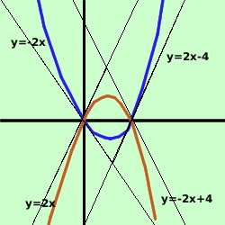

esercizio
Date le parabole
y= x2
- 2x e y= -x2 + 2x
trovare le equazioni delle tangenti nei punti comuni alle due
parabole e dire quale tipo di figura individuano tali tangenti
Soluzione:

prima disegniamo le due parabole
e, facendolo, abbiamo trovato che i punti di intersezione sono
O=(0,0) A=(2,0)
dovremo trovare 4 tangenti: due alla prima parabola nei punti O ed A e due alla
seconda sempre negli stessi punti
- Tangente alla parabola y= x2
- 2x nell'origine
ricordando l'osservazione del problema 0
sulle tangenti di una curva in un suo punto possiamo scrivere
y = - 2x
- Tangente alla parabola y= x2
- 2x nel punto A=(2,0)
considero il fascio di rette passante per il punto A
y - 0 = m(x-2)
y = mx - 2m
Faccio il sistema fra il fascio di rette e la parabola
 y = mx - 2m
y = mx - 2m
y= x2
- 2x
Sostituisco il valore della y dalla prima equazione nella seconda ed ottengo
l'equazione risolvente
mx - 2m =
x2
- 2x
0 = x2
- 2x - mx + 2m
meglio
x2
- 2x - mx + 2m = 0 usando la proprieta' riflessiva
dell'uguaglianza: se a=b anche b=a
raccolgo ad equazione di secondo grado
x2
- x(2+m) + 2m = 0
questa e' l'equazione risolvente il sistema: per avere due soluzioni
coincidenti devo porre il delta dell'equazione uguale a zero
 = b2-4ac =
0 = b2-4ac =
0
Ho
a = 1
b = -(2+m)
c = 2m
= b2-4ac =
[-(2+m)]2 - 4 (1)(2m) =0
4 + 4m + m2 - 8m = 0
Se non seiconvinto dei segni del quadrato ferma il mouse
sul risultato
calcolo
m2 - 4m + 4 = 0
Come ti avevo detto e' un quadrato perfetto (essendo il punto di tangenza
formato da due punti sovrapposti in cui calcolare le tangenti la soluzione e'
doppia); risolvo ed ottengo:
(m - 2)2 = 0
m = 2 (doppia)
Ho quindi la tangente
y = 2x - 4
- Tangente alla parabola y= -x2
+ 2x nell'origine
ricordando l'osservazione del problema 0
sulle tangenti di una curva in un suo punto possiamo scrivere
y = 2x
- Tangente alla parabola y= -x2
+ 2x nel punto A=(2,0)
considero il fascio di rette passante per il punto A
y - 0 = m(x-2)
y = mx - 2m
Faccio il sistema fra il fascio di rette e la parabola
y = mx - 2m
y= -x2
+ 2x
Sostituisco il valore della y dalla prima equazione nella seconda ed ottengo
l'equazione risolvente
mx - 2m =
- x2
+ 2x
x2
- 2x + mx -2m = 0
x2
- x(2-m) - 2m = 0
questa e' l'equazione risolvente il sistema: per avere due soluzioni
coincidenti devo porre il delta dell'equazione uguale a zero
= b2-4ac =
0
Ho
a = 1
b = -(2-m)
c = -2m
= b2-4ac =
[-(2-m)]2 - 4 (1)(-2m) =0
4 - 4m + m2 + 8m = 0
Se non seiconvinto dei segni del quadrato ferma il mouse
sul risultato
calcolo
m2 + 4m + 4 = 0
Come ti avevo detto e' un quadrato perfetto (essendo il punto di tangenza
formato da due punti sovrapposti in cui calcolare le tangenti la soluzione e'
doppia); risolvo ed ottengo:
(m + 2)2 = 0
m = -2 (doppia)
Ho quindi la tangente
y = -2x + 4
Ora se osservo le equazioni delle tangenti
y = -2x
y = 2x - 4
y = 2x
y = -2x + 4
vedo che le rette hanno due a due gli stessi coefficienti angolari, cioe'
y = -2x e y = -2x + 4 sono tra
loro parallele (coefficienti angolari
m1 = m2 = -2)
y = 2x - 4 e y = 2x sono tra
loro parallele (coefficienti angolari
m1 = m2 = 2)
Pertanto, senza procedere oltre posso dire che il quadrilatero, avendo i lati
due a due paralleli e' un parallelogramma.
Per continuare l'esercizio prova a dimostrare che si tratta di un
rombo seguendo la definizione
|